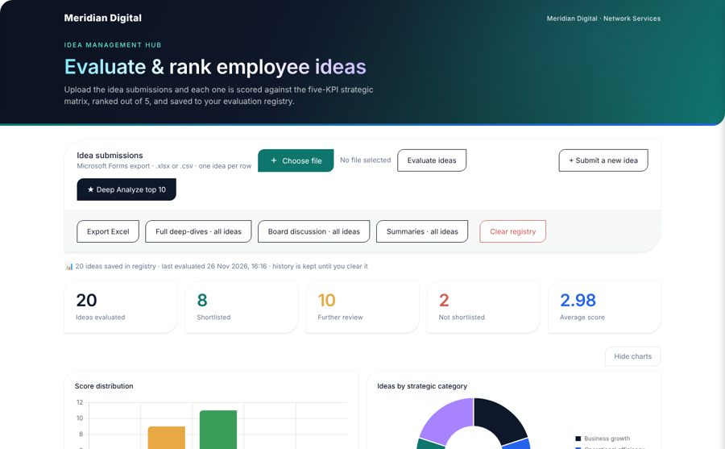
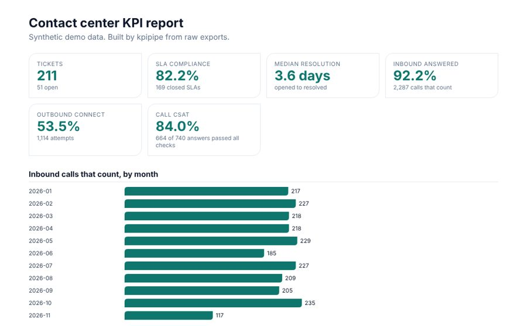

IT Associate, Customer Success Engineering, at Aramco Digital (through Sutherland), Eastern Province, Saudi Arabia. I work on data pipelines, Power BI models and internal web portals and an AI-assisted idea review tool. Master of AI student at KFUPM. Before this, I built a proof-of-concept Arabic voice agent at MADFU BNPL.

Scores employee ideas on a weighted five-KPI matrix, then runs a six-member AI board review: independent parallel Claude calls, a chair who reconciles their verdicts, and a challenge round when the board is split. The board's decision, not the score, becomes the idea's status. Includes prompt-injection fencing, token cost tracking, three report tiers and Excel export.
I was technical lead on the internal original. The public version has the company's branding and data removed and runs offline in demo mode.
View code
Turns five raw exports (tickets, SLAs, inbound calls, outbound calls, post-call surveys) into one SQLite database for BI. Counting rules live in code: test lines and short abandons are removed, SLA resets are collapsed, and a survey answer counts only after four checks tie it to a real answered call.
Rebuilt on synthetic data from the pipeline I created for my team, which the call center later aligned its official KPI report to.
View codeOutbound debt collection agent for a BNPL company, tested on live calls. Asterisk, Dialogflow CX, Google STT, ElevenLabs, BigQuery, plus Saudi dialect normalization and a promise-to-pay extractor.
Safety and dialect robustness testing of regional Arabic LLMs with AI Astrolabe, and Arabic dialect data annotation for voice and mobile AI.
Customer Success and Support Services portals plus a call center agent workspace, around 40 internal users including VP leadership. No-code editing, validated data refresh, encrypted sections.
Star-schema models for a CSAT program and a call center, with NPS and quarter-over-quarter views used in board reporting.
Data pipelines, Power BI and internal portals for the customer success, support services and call center teams. Technical lead on an AI idea evaluation platform. Customer Success Manager for enterprise accounts.
Proof-of-concept Arabic voice agent for outbound collections, tested on live calls.
AI chatbot and React prototypes, including a fintech KPI dashboard. UX for a Hajj planning platform.
Dynatrace monitoring, automated reports, disaster recovery drills.
KFUPM, Master of Artificial Intelligence, in progress (expected 2028)
Effat University, BSc Computer Science, Cybersecurity, GPA 3.65
AI: Python, Claude API, OpenAI, Dialogflow CX, Vertex AI, Hugging Face, prompt engineering
Data: pandas, SQLite, BigQuery, Power BI (DAX, Power Query)
Web: Flask, React, JavaScript, Flutter
Languages: Arabic (native), English (IELTS 8.0)